ภาพรวมบทนี้ L4 มองระบบจาก มุมของผู้ใช้ (use case = ใครทำอะไร) บทนี้เปลี่ยนมามองจาก มุมของข้อมูล ว่าข้อมูลเข้ามาจากไหน ถูกแปลงอย่างไร เก็บไว้ที่ไหน และออกไปหาใคร เครื่องมือหลักคือ Data Flow Diagram (DFD)
เนื้อหามี 2 ส่วนใหญ่: (1) Flow-oriented modeling คือสัญลักษณ์ 4 ตัว, context diagram, การแตกระดับ (level 0 → 1 → 2) และการตั้งเลข process (2) Model consistency checking คือกฎ DFD, internal consistency และ hierarchical consistency (balancing)
ท้ายบทมีแบบฝึก "ถูกหรือผิด?", หาข้อผิดใน DFD และวาด context DFD ของระบบขายบัตรสวนสัตว์ (ระบบเดียวกับใน L4)
1. Recap และตำแหน่งของบทนี้
ที่เรียนมาแล้ว
- Requirements Engineering (L3): user requirements, system requirements, functional requirements, non-functional requirements
- Use case modeling (L4): use case diagrams, use case narrative
What's next? → บทนี้
- Flow-oriented modeling
- Model consistency checking
2. Requirements Modeling Strategies
มี 2 แนวทางในการทำโมเดล requirement:
| Structured analysis | Object-oriented analysis | |
|---|---|---|
| มองระบบอย่างไร | แยก ข้อมูล (data) กับ process ที่แปลงข้อมูล ออกเป็นคนละส่วน | มองเป็น class ที่ทำงานร่วมกัน |
| โมเดลข้อมูล | กำหนด attribute และความสัมพันธ์ ของ data object | – |
| โมเดล process | แสดงว่า process แปลงข้อมูลอย่างไร ขณะที่ data object ไหลผ่านระบบ | – |
| เน้น | data + process | นิยาม class และ วิธีที่ class ร่วมมือกัน เพื่อตอบ requirement ของลูกค้า |
| ตัวอย่างแผนภาพ | DFD (บทนี้), ERD | Class diagram |
💡 DFD เป็นเครื่องมือของ structured analysis
3. Elements of Requirements Analysis
ภาพวงกลมมี software requirements อยู่ตรงกลาง ล้อมด้วยโมเดล 4 กลุ่ม:
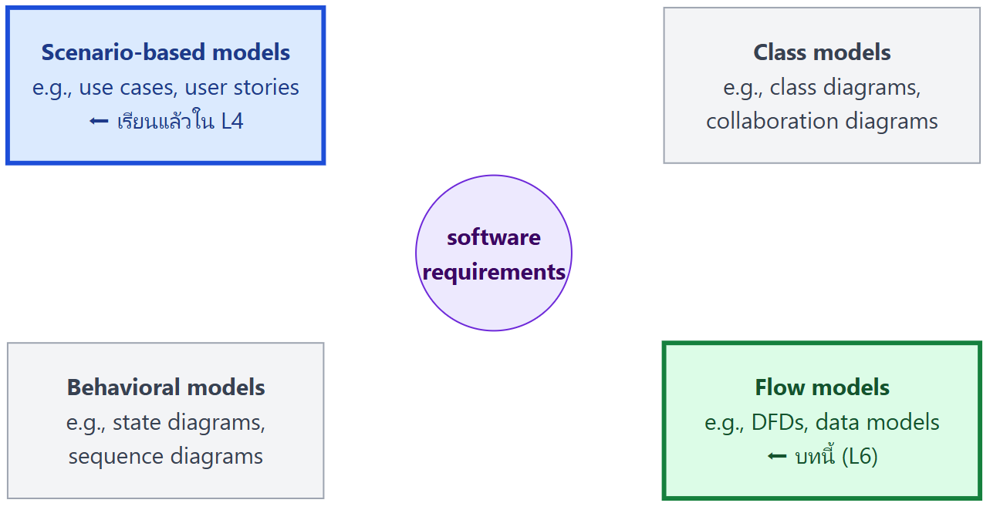
ลูกศรในสไลด์ชี้ที่ Scenario-based models (เรียนแล้วใน L4) และ Flow models (บทนี้)
4. Flow-Oriented Modeling
- แสดงว่า data object ถูกแปลง (transform) อย่างไร ขณะเคลื่อนผ่านระบบ
- แผนภาพที่ใช้คือ Data Flow Diagram (DFD)
- หลายคนมองว่าเป็นวิธี "old school" แต่ยังให้มุมมองต่อระบบที่ ไม่เหมือนโมเดลอื่น จึงควรใช้ เสริม analysis model อื่น ๆ
The Flow Model
ระบบคอมพิวเตอร์ทุกระบบแปลง input เป็น output
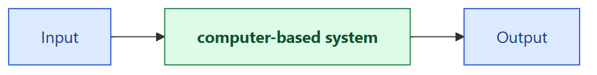
5. สัญลักษณ์ DFD (Flow Modeling Notation)
มี 2 สำนักที่ใช้กันบ่อย สัญลักษณ์ต่างกันแต่ความหมายเหมือนกัน
| องค์ประกอบ | Yourdon / DeMarco | Gane / Sarson |
|---|---|---|
| External entity | ▭ สี่เหลี่ยม | ▭ สี่เหลี่ยม (มักมีเงา) |
| Process | ◯ วงกลม (bubble) | ▢ สี่เหลี่ยมมุมมน มีช่องเลขด้านบน |
| Data flow | ──► ลูกศร | ──► ลูกศร |
| Data store | ═ เส้นขนาน 2 เส้น | ▭ สี่เหลี่ยมเปิดด้านขวา มีช่อง ID (เช่น D1) ด้านซ้าย |
(รายละเอียดรูปทรงอธิบายจากภาพในสไลด์และตัวอย่างในบทนี้ ตัวอย่าง Library Query System ใช้แบบ Yourdon ส่วนตัวอย่างของ Wiley ใช้แบบ Gane/Sarson)
⚠️ ใช้สัญลักษณ์สำนักเดียวกันตลอดทั้งแผนภาพ อย่าผสมกัน (หลักทั่วไป)
🎨 วิธีอ่านรูปในสรุปนี้: 🟦 สี่เหลี่ยมสีฟ้า = external entity · 🟢 วงกลมสีเขียว = process · 🟨 สี่เหลี่ยมสีเหลืองที่มีขีดด้านซ้าย = data store · ลูกศร = data flow · ⬜ กล่องสีเทา = ป้ายข้อมูลหรือคำอธิบายเสริม (ไม่ใช่สัญลักษณ์ DFD) · กรอบเส้นประ = entity ตัวเดียวกันที่วาดซ้ำเพื่อให้อ่านง่าย
5.1 External Entity (▭)
- ผู้ผลิตหรือผู้บริโภคข้อมูล (producer or consumer of data)
- คน องค์กร หรือระบบ ที่อยู่ ภายนอก ระบบ
- มีปฏิสัมพันธ์กับระบบ คือส่งข้อมูลเข้าระบบ หรือรับข้อมูลจากระบบ
- ตัวอย่าง: คน, อุปกรณ์, sensor, ระบบคอมพิวเตอร์อื่น
💡 ข้อมูลต้องมีต้นทางและปลายทางเสมอ (Data must always originate somewhere and must always be sent to something) external entity คือต้นทางและปลายทางนั้น
5.2 Process (◯ หรือ ▢)
- ตัวแปลงข้อมูล (data transformer) เปลี่ยน input เป็น output
- กิจกรรมหรือฟังก์ชัน ที่มีการจัดการและแปลงข้อมูล
- ตัวอย่าง: compute taxes, determine area, format report, display graph
💡 ข้อมูลต้องถูก process เสมอ จึงจะเกิดฟังก์ชันของระบบได้
Logical process ที่ควรใส่ใน DFD
| ชนิด | ตัวอย่าง |
|---|---|
| ทำการคำนวณ | calculate grade point average |
| ตัดสินใจ | determine availability of ordered products |
| เรียง กรอง หรือสรุปข้อมูล | identify overdue invoices |
| จัดข้อมูลให้เป็นสารสนเทศที่มีประโยชน์ | generate a report, answer a question |
| สั่งให้ process อื่นทำงาน | turn on the furnace, instruct a robot |
| ใช้ข้อมูลที่เก็บไว้ | create, read, update or delete a record (CRUD) |
💡 ตั้งชื่อ process แบบ กริยา + กรรม เช่น "Calculate Gross Pay", "Search for book" (หลักทั่วไป)
5.3 Data Flow (──►)
- ข้อมูลที่กำลังเคลื่อนที่ (data in motion)
- เป็น input ของ process หรือ output (ข้อมูลหรือสารสนเทศ) ของ process
- เป็นการ สร้าง ลบ หรืออัปเดตข้อมูล ในไฟล์หรือฐานข้อมูล (data store)
- ข้อมูลไหลผ่านระบบโดยเริ่มจาก input แล้วถูกแปลงเป็น output
ตัวอย่าง
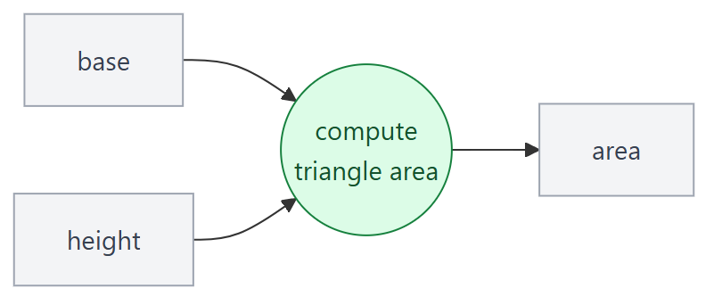
💡 ตั้งชื่อ data flow ด้วย คำนาม เช่น "Invoice", "Hours Worked" (หลักทั่วไป)
Data Flow Packet Concept
ข้อมูลที่ไปด้วยกันควรแสดงเป็น data flow เส้นเดียว ไม่ว่าจะมีเอกสารจริงกี่ชิ้นก็ตาม
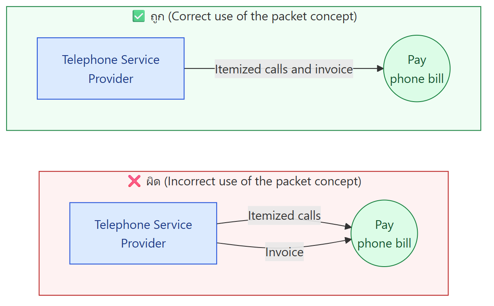
รายการโทรกับใบแจ้งหนี้ส่งมาพร้อมกันในซองเดียว จึงควรเป็นลูกศรเส้นเดียว
5.4 Data Store (═ หรือ ▭ เปิดขวา)
- ข้อมูลมักถูกเก็บไว้ใช้ภายหลัง
- เป็นที่เก็บ ข้อมูลถาวร (persistent data) ที่ process ต้องใช้หรือสร้างขึ้น
- Data flow ที่ออกจาก data store = การดึงข้อมูล (retrievals)
- Data flow ที่เข้า data store = การอัปเดต หรือเพิ่มข้อมูลใหม่
ตัวอย่างในสไลด์
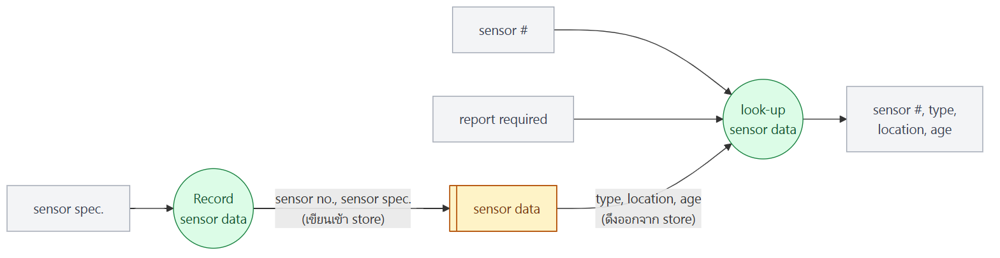
6. DFD แบบหลายระดับ (Depicting Business Processes with DFDs)
- Business process ซับซ้อนเกินกว่าจะแสดงใน DFD แผ่นเดียว
- จึงสร้าง ลำดับชั้น ของ DFD หลาย "level" อย่างตั้งใจ
- สร้างลำดับชั้นด้วยการ Decomposition (แตกย่อย)
- Child diagram แสดงส่วนหนึ่งของ parent diagram อย่างละเอียดขึ้น
7. Guidelines และการสร้าง DFD
Data Flow Diagramming: Guidelines
- ทุกสัญลักษณ์ต้องมีชื่อที่มีความหมาย
- DFD พัฒนาผ่าน หลายระดับความละเอียด
- เริ่มจาก context level diagram เสมอ (เรียกอีกชื่อว่า level 0)
- แสดง external entities ที่ level 0 เสมอ
- ใส่ชื่อ data flow ทุกเส้นเสมอ
Constructing a DFD (ขั้นตอนเริ่มต้น)
- ทบทวน user scenarios และ/หรือ data model เพื่อแยก data object ออกมา และใช้ grammatical parse (แยกไวยากรณ์) หา "operations"
- หา external entities (ผู้ผลิตและผู้บริโภคข้อมูล)
- สร้าง level 0 DFD (context diagram)
💡 Grammatical parse คือการอ่านคำอธิบายระบบแล้วขีดเส้น คำนาม (เป็นผู้สมัคร entity, data store, data flow) และ คำกริยา (เป็นผู้สมัคร process) (คำอธิบายเสริม) เทคนิคเดียวกับการหา actor และ use case ใน L4
8. Context Diagram (Level 0)
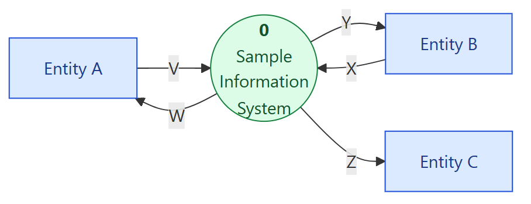
- DFD ระดับบนสุด ในทุก process model
- แสดง บริบท ว่า business process อยู่ในสภาพแวดล้อมแบบไหน
- แสดง ทั้ง business process เป็น process เดียว คือ process "zero" (0)
- แสดง external entities ทั้งหมด ที่รับข้อมูลจากระบบหรือส่งข้อมูลให้ระบบ
ตัวอย่าง: Digital video processor
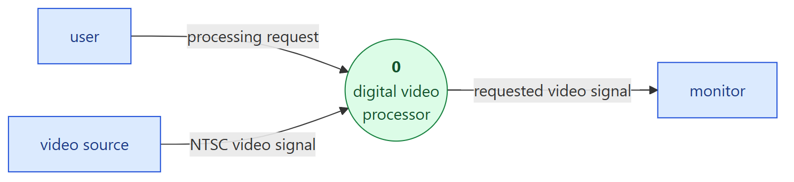
- External entities: user, video source, monitor
- Process เดียว: digital video processor
⚠️ Context diagram ไม่มี data store เพราะทุก data store อยู่ภายในระบบ ซึ่งยุบรวมเป็น process 0 แล้ว (หลักทั่วไป สอดคล้องกับกฎ "context diagram ต้องมีแค่ process เดียว")
9. Data Flow Hierarchy
ภาพนามธรรม (Pressman)
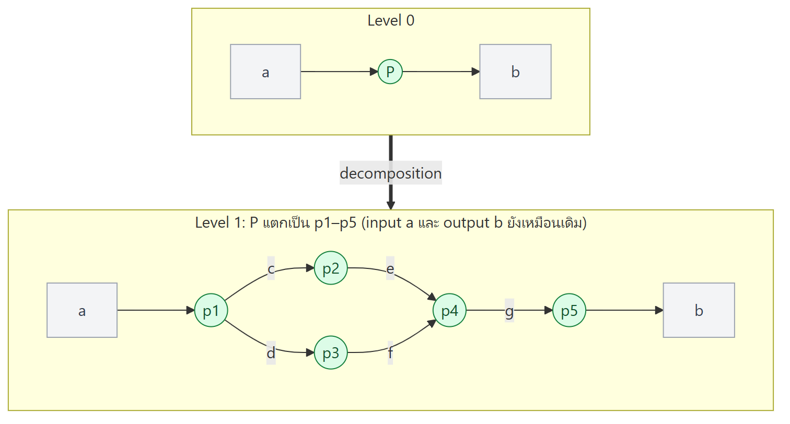
process P ใน level 0 ถูกแตกเป็น p1–p5 ใน level 1 โดย input a และ output b ยังเหมือนเดิม ส่วน c, d, e, f, g เป็น data flow ใหม่ที่อยู่ภายใน (ลำดับเส้นภายในวาดจากภาพ ใช้ดูหลักการเท่านั้น)
ภาพตัวอย่าง (Wiley): Context → Level 1
Context Diagram: Entity A ⇄ (V, W) ⇄ 0 Sample Information System ⇄ (X, Y) Entity B, และ Z → Entity C
Level 1 Diagram:
| Process | Input | Output |
|---|---|---|
| 1 Process AA | V (จาก Entity A) | A → D1 Data Store P, B → Process 2 |
| 2 Process BB | B (จาก Process 1), D (จาก D2) | W → Entity A, C → D2 Data Store Q, E → Process 3, Z → Entity C |
| 3 Process CC | E (จาก Process 2), F (จาก D1), X (จาก Entity B) | G → D1, Y → Entity B |
💡 สังเกต V, W, X, Y, Z ของ context diagram ยังอยู่ครบใน level 1 ส่วน A–G และ data store D1, D2 เพิ่งโผล่มา ใน level 1 นี่คือหลัก balancing (หัวข้อ 10)
Flow Modeling Notes
- แตกแต่ละ bubble (process) ไปเรื่อย ๆ จนกว่าจะทำแค่อย่างเดียว
- อัตราการขยาย (expansion ratio) ลดลงเมื่อจำนวนระดับเพิ่มขึ้น (ระดับลึก ๆ แตกออกน้อยลง)
- ระบบส่วนใหญ่ต้องใช้ 3–7 ระดับ จึงจะได้ flow model ที่เพียงพอ
- data flow เส้นเดียวอาจถูกแตกย่อย เมื่อระดับลึกขึ้น โดยดูรายละเอียดจาก data dictionary
10. Balancing
- ทำให้มั่นใจว่า ข้อมูลที่แสดงใน DFD ระดับหนึ่ง ถูกแสดงอย่างถูกต้องในระดับถัดไป
- Data flow ของ parent diagram ต้องถูกนำลงไปใน child diagram
- Child diagram เพิ่ม process และ data flow ใหม่ได้
ความต่างระหว่าง Parent กับ Child (สไลด์ 26)
Parent (บางส่วน):
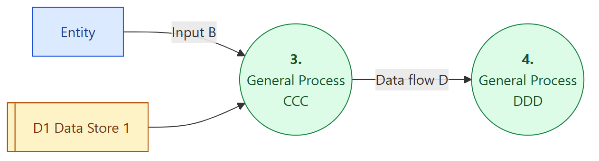
Child ของ process 3:
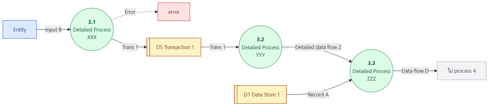
| จุดสังเกตในภาพ | ความหมาย |
|---|---|
| Matching parent-child decomposition | process 3 แตกเป็น 3.1, 3.2, 3.3 |
| Input B และ Data flow D | output ต้องตรงกับ parent process ทั้ง input และ output ของ process 3 ต้องปรากฏใน child |
| Matching data store | D1 Data Store 1 ที่ parent ใช้ ต้องปรากฏใน child ด้วย |
| Error lines and transaction files | เพิ่มได้ใน child diagram ที่ละเอียด เช่น เส้น Error และ D5 Transaction 1 ที่ parent ไม่มี |
11. กฎของ DFD
Rules for Data Flows
- Data flow ต้องมีชื่อเสมอ
- ใน logical modeling ชื่อ data flow ต้อง บอกว่าเป็นข้อมูลอะไร โดยไม่บอกวิธี implement (เช่น ใช้ "Customer Order" ไม่ใช่ "Order Email" หรือ "SQL Query")
- ทุก data flow ต้องเริ่มและ/หรือจบที่ process
Don't Break DFD Rules! (3 ข้อห้าม)
| # | ❌ ห้าม | ภาพในสไลด์ |
|---|---|---|
| 1 | Data flow ไม่ควรแยกออกเป็น 2 เส้นขึ้นไปที่เป็นข้อมูลต่างกัน | ลูกศรจาก process 1 แตกเป็น 2 ทางไป process 2 และ 3 |
| 2 | ทุก data flow ต้องเริ่มหรือจบที่ process | entity → entity และ entity → data store |
| 3 | Process ต้องมี input อย่างน้อย 1 เส้น และ output อย่างน้อย 1 เส้น | process ที่มีแต่ลูกศรเข้า 3 เส้น ไม่มีออก |
ชื่อเรียกความผิดที่พบบ่อย (คำศัพท์เสริม ไม่ได้อยู่ในสไลด์ แต่ใช้กันทั่วไป)
| ชื่อ | อาการ |
|---|---|
| Black hole | process มีแต่ input ไม่มี output |
| Miracle (spontaneous generation) | process มีแต่ output ไม่มี input |
| Gray hole | input ไม่พอจะสร้าง output ได้ |
ตารางสรุป: ต่อจากอะไรไปอะไรได้บ้าง (สรุปจากกฎข้างบน)
| จาก \ ไป | Process | External Entity | Data Store |
|---|---|---|---|
| Process | ✅ | ✅ | ✅ |
| External Entity | ✅ | ❌ | ❌ |
| Data Store | ✅ | ❌ | ❌ |
💡 จำง่าย ๆ: ทุกเส้นต้องแตะ process อย่างน้อยหนึ่งฝั่ง
12. Dataflow Analysis: Internal Consistency
ตรวจความถูกต้อง ภายใน แต่ละแผนภาพ
Context Diagram
- ต้องมี
- มีแค่ process เดียว
- มี input จาก external entity อย่างน้อย 1 และ output ไป external entity อย่างน้อย 1
- process ต้องมีเลข 0
Detailed DFDs
- มี process อย่างน้อย 1
- มี process ไม่เกิน 7
Process
- มี input data flow อย่างน้อย 1 และ output data flow อย่างน้อย 1
- ต้องเชื่อมกับ data store, process หรือ external entity
- ต้องมีชื่อ
External Entity
- ต้องปรากฏเฉพาะใน context diagram (ตามสไลด์ แต่ในตัวอย่างของสไลด์เองก็วาด entity ซ้ำใน level 1–2 เพื่อให้อ่านง่าย)
- ต้องเชื่อมกับ process
- ต้องมีชื่อ
Data Flow
- ต้องเป็น interface ระหว่าง process กับ process อื่น, data store หรือ external entity
- data flow ที่ เข้าหรือออกจาก data store ต้องมี องค์ประกอบเป็นส่วนย่อย (subset) ขององค์ประกอบของ data store นั้น
- ต้องมีชื่อ
Data Store
- ต้องเป็น interface ระหว่าง 2 process
- ต้องมีชื่อ
13. Dataflow Analysis: Hierarchical Consistency
ตรวจความสอดคล้อง ระหว่างระดับ (parent ↔ child)
Data Flow Diagram
- ต้องมี parent diagram ยกเว้น context diagram
Process
- ต้องแตกย่อยเป็น แผนภาพอื่น หรือเป็น primitive process specification (process ระดับล่างสุดที่อธิบายเป็นข้อความ เรียนใน L7)
- ต้องมีเลขที่อ้างอิงกับ parent
Data Flow
- input (output) ใน parent ต้องปรากฏใน child เป็น input (output)
- input (output) ใน child ต้องปรากฏใน parent เป็น input (output)
- ชุด data flow ใน child ที่ แยกมาจาก data flow ของ parent ต้องมี องค์ประกอบรวมกันตรงกับ data flow ของ parent
- data flow ต้องแตกย่อยเป็น record definition หรือ element definition (อาจเป็นอันเดียวกับใน ERD)
Data Store
- ต้องแตกย่อยเป็น file definition หรือ record definition (อาจเป็นอันเดียวกับใน ERD)
Primitive Process Specification
- input และ output ทั้งหมดต้องตรงกับ primitive process ใน DFD
- ต้องมี identifier เดียวกับ primitive process ใน DFD
⚠️ ข้อยกเว้นที่ child ต่างจาก parent ได้: เส้น error และ transaction file (หัวข้อ 10)
14. Diagram Numbering
การตั้งเลข process ให้ถูก ช่วยให้รู้ว่า process นั้นอยู่ตรงไหนในลำดับชั้น
| ระดับ | รูปแบบเลข | ตัวอย่าง |
|---|---|---|
| Context Diagram | "Level 0" (process 0) | 0 |
| Level 1 | เลขจำนวนเต็ม | 1, 2, 3 |
| Level 2 | 1 จุด: เลข parent . เลขเฉพาะ | 1.1, 1.2, 1.3 |
| Level 3 | 2 จุด: เลข parent . เลขเฉพาะ | 1.1.1, 1.1.2, 1.1.3 |
ตัวอย่าง DFD Numbering + Hierarchical Consistency (สไลด์ 34)
Process 1 Level 2 Diagram (แตกจาก 1 Process AA)
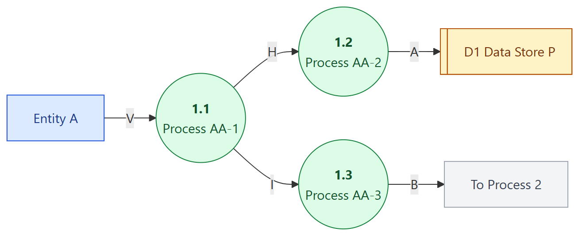
✅ ตรงกับ parent: input V และ output A, B ครบ ส่วน H, I เป็น flow ใหม่ภายใน
Process 2 Level 2 Diagram (แตกจาก 2 Process BB)
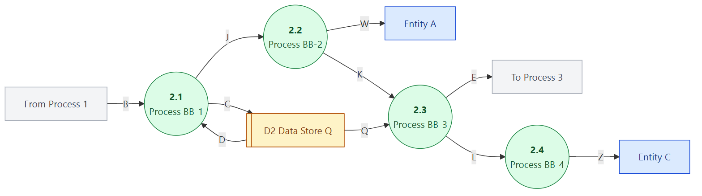
✅ ตรงกับ parent: input B, D และ output W, C, E, Z ครบ ส่วน J, K, L, Q เป็น flow ใหม่
Process 3 Level 2 Diagram (แตกจาก 3 Process CC)
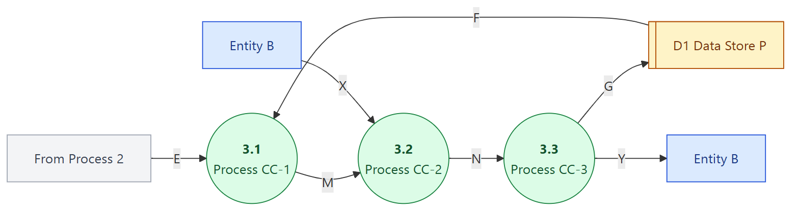
✅ ตรงกับ parent: input E, F, X และ output G, Y ครบ ส่วน M, N เป็น flow ใหม่
(ทิศของลูกศรภายในบางเส้นอ่านจากภาพขนาดเล็ก ใช้ดูหลักการ)
15. ตัวอย่าง: DFD for Library Query System
Level 0 (Context Diagram)
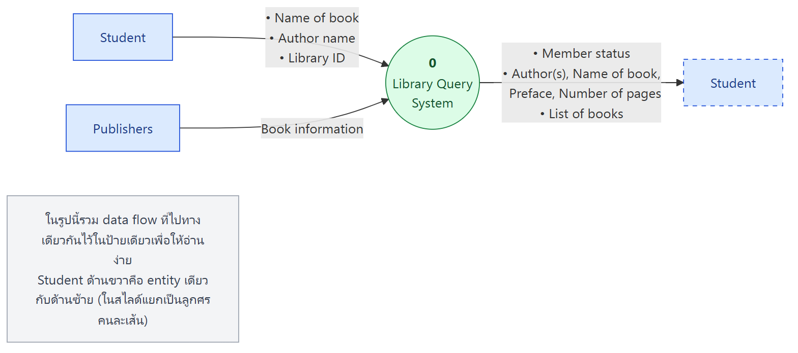
- External entities: Student, Publishers
- Process: 0 Library Query System
- Input: Name of book, Author name, Library ID (จาก Student), Book information (จาก Publishers)
- Output: Member status, Author(s)/Name of book/Preface/Number of pages, List of books (ไปหา Student)
Level 1
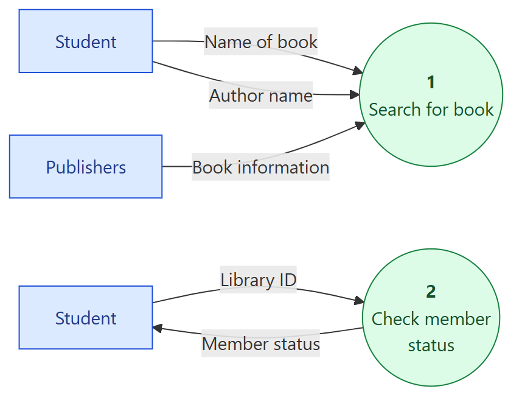
⚠️ ในสไลด์ level 1 process 1 ไม่ได้วาด output (Author(s)..., List of books) ถ้ายึดกฎ process ต้องมี output และ balancing กับ level 0 ควรมีลูกศร output ไปหา Student ด้วย (ข้อสังเกตของผม)
Level 2 (แตกจาก process 1 Search for book)
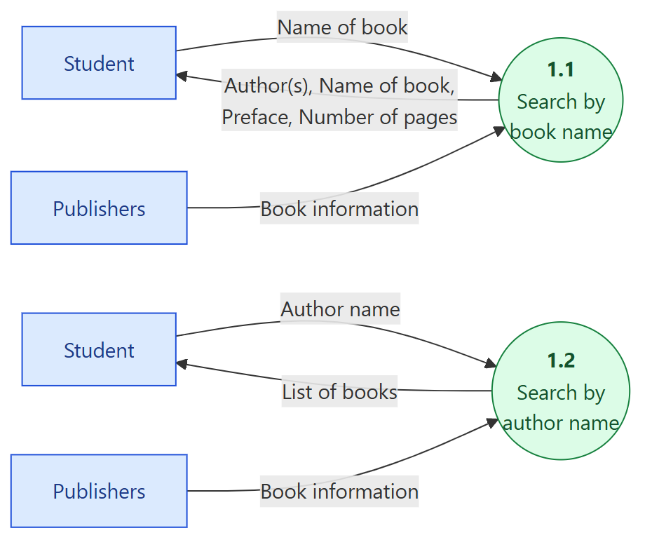
- 1.1 Search by book name: ใส่ชื่อหนังสือ → ได้ผู้แต่ง ชื่อหนังสือ คำนำ จำนวนหน้า
- 1.2 Search by author name: ใส่ชื่อผู้แต่ง → ได้รายการหนังสือ
- output ของทั้งสองตรงกับ output ใน level 0 ✅
16. แบบฝึก: Correct / Incorrect?
(สไลด์มีแค่ภาพ ไม่มีเฉลย เฉลยด้านล่างผมวิเคราะห์ตามกฎในบท)
สไลด์ 38
| ภาพ | ถูก/ผิด | เหตุผล |
|---|---|---|
| 5.0 Create Invoice: Services Performed → process → Invoice | ✅ ถูก | มีเลข มีชื่อ มี input และ output |
| Apply Insurance Premium: มีลูกศร ออก 2 เส้น (Policy Number, Payment Amount) ไม่มีเข้า และ ไม่มีเลข process | ❌ ผิด | ไม่มี input (miracle) และไม่มีเลข |
| 2.1 Calculate Gross Pay: Hours Worked และ Pay Rate เข้า ทั้งคู่ ไม่มีออก | ❌ ผิด | ไม่มี output (black hole) |
สไลด์ 39
| ภาพ | ถูก/ผิด | เหตุผล |
|---|---|---|
| Courses (data store) → Class List → Students (data store) | ❌ ผิด | data store → data store ต้องผ่าน process |
| 5.0 Post Payment → Customer Payment → D2 Daily Payments → Daily Payment → 6.0 Prepare Deposit | ✅ ถูก | data store อยู่ระหว่าง 2 process ตามกฎ |
สไลด์ 40
| ภาพ | ถูก/ผิด | เหตุผล |
|---|---|---|
| Passengers (data store) → Flight Request → 2.0 Book Flight | ❌ น่าจะผิด | ตามสัญลักษณ์ store → process ทำได้ แต่ "คำขอจองเที่ยวบิน" ต้องมาจากผู้โดยสารที่เป็นคน ซึ่งเป็น external entity ไม่ใช่ข้อมูลที่เก็บอยู่ในแฟ้ม และ data store ต้องเป็น interface ระหว่าง 2 process (ใช้สัญลักษณ์ผิด) |
| D2 Accounts Receivable ⇄ 3.0 Post Payment (Invoice Detail ออกจาก store, Payment Detail เข้า store) | ✅ ถูก | อ่าน (retrieval) และเขียน (update) ผ่าน process |
สไลด์ 41
| ภาพ | ถูก/ผิด | เหตุผล |
|---|---|---|
| PAYROLL DEPARTMENT → Paycheck → EMPLOYEE | ❌ ผิด | entity → entity ไม่ผ่าน process (และเกิดนอกระบบ ไม่ควรอยู่ใน DFD) |
| CUSTOMER → Payment → 3.0 Apply Payment | ✅ ถูก | entity → process |
| CUSTOMER → Payment → Accounts Receivable (data store) | ❌ ผิด | entity → data store ต้องผ่าน process |
สไลด์ 42: List the Errors in This DFD
ภาพ:
- E1 → DF2 → 1.0 P2
- E1 → DF5 → DS1
- E1 → DF1 → E1 (ตัวที่สอง)
- E1 (ตัวที่สอง) → DF2 → 2.0 P1
- DS1 → DF6 → 2.0 P1
- 2.0 P1 → DF3 → 1.0 P2
- 2.0 P1 → DF4 → E1
ข้อผิดพลาด
- DF1: E1 → E1 เป็น entity → entity (ไม่ผ่าน process) และยังชี้เข้าหา entity ชื่อเดียวกัน
- DF5: E1 → DS1 เป็น entity → data store (ต้องผ่าน process)
- DS1 ไม่ได้เป็น interface ระหว่าง 2 process เพราะมีแค่ entity เขียนเข้าและ process เดียวอ่าน
- 1.0 P2 มีแต่ input (DF2, DF3) ไม่มี output เป็น black hole
- ใช้ชื่อ DF2 ซ้ำกับ 2 เส้นที่ต้นทางและปลายทางต่างกัน ทำให้กำกวม (ถ้าเป็นข้อมูลต่างกันต้องตั้งชื่อต่างกัน)
- E1 วาดซ้ำ 2 ครั้งโดยไม่มีเครื่องหมายบอกว่าซ้ำ ทำให้ดูเหมือนเป็นคนละ entity
- เลขกับชื่อ process สลับกัน (1.0 ชื่อ P2, 2.0 ชื่อ P1) ทำให้สับสน และชื่อ P1, P2, DF1... ไม่มีความหมาย ผิด guideline "ทุกสัญลักษณ์ต้องมีชื่อที่มีความหมาย"
17. Exercise: Context DFD ระบบขายบัตรสวนสัตว์ (สำหรับผู้เยี่ยมชม)
โจทย์: ผู้เยี่ยมชมซื้อตั๋วโดยเลือกประเภทบัตร (เด็ก ผู้ใหญ่ ผู้สูงอายุ) และวันที่เข้าชม → ระบบแสดงราคาตามที่ผู้ดูแลระบบกำหนด → ชำระด้วยบัตรเครดิตหรือ QR Code → ระบบออกตั๋วพร้อม Booking ID และ QR Code → ผู้เยี่ยมชมตรวจรายละเอียดและสถานะตั๋วได้ → ขอยกเลิกก่อนวันเข้าชม ระบบตรวจเงื่อนไขและคืนเงินตามนโยบาย
แนวคำตอบ (ผมวาดเอง)
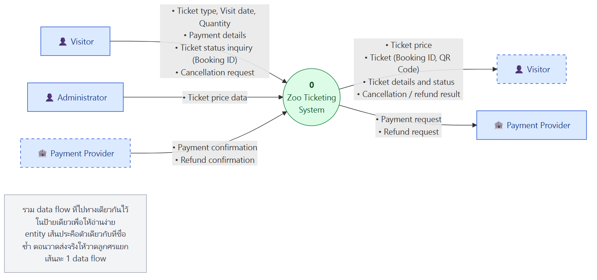
ตรวจกับกฎ
- ✅ มี process เดียว ชื่อ 0 และมีชื่อที่มีความหมาย
- ✅ มี input จาก entity และ output ไป entity
- ✅ ไม่มี data store (ข้อมูลตั๋วและราคาเก็บอยู่ภายในระบบ)
- ✅ data flow ทุกเส้นมีชื่อเป็นคำนาม และเป็นชื่อเชิงตรรกะ ไม่บอกวิธี implement
- ถ้าโจทย์ให้วาด "สำหรับผู้เยี่ยมชม" อย่างเดียว อาจตัด Administrator ออก แต่ ราคามาจากที่ผู้ดูแลระบบกำหนด จึงควรใส่ไว้ให้เห็นที่มาของข้อมูล
- Payment Provider (ธนาคารหรือผู้ให้บริการ QR) เป็น entity ภายนอกที่ยืนยันการชำระเงินและคืนเงิน
คำศัพท์สำคัญ
| คำศัพท์ | ความหมาย | จำง่าย ๆ ว่า |
|---|---|---|
| Structured analysis | แยกข้อมูลกับ process ที่แปลงข้อมูลออกจากกัน | data + process |
| Object-oriented analysis | มองเป็น class ที่ทำงานร่วมกัน | class |
| Flow-oriented modeling | โมเดลว่าข้อมูลถูกแปลงอย่างไรขณะไหลผ่านระบบ | ข้อมูลไหล |
| DFD (Data Flow Diagram) | แผนภาพการไหลของข้อมูล | แผนที่ข้อมูล |
| Yourdon/DeMarco vs Gane/Sarson | 2 ชุดสัญลักษณ์ DFD (process เป็นวงกลม vs สี่เหลี่ยมมุมมน) | วงกลม vs มุมมน |
| External entity | ผู้ผลิตหรือผู้บริโภคข้อมูล อยู่นอกระบบ | ต้นทาง/ปลายทาง |
| Process | ตัวแปลงข้อมูล input → output | เครื่องแปลง |
| Data flow | ข้อมูลที่กำลังเคลื่อนที่ (data in motion) | ลูกศร |
| Data store | ที่เก็บข้อมูลถาวร ออก = retrieval, เข้า = update | แฟ้ม |
| Data flow packet | ข้อมูลที่ไปด้วยกันให้วาดเป็นเส้นเดียว | ห่อเดียว |
| Decomposition | แตก process เป็นระดับที่ละเอียดขึ้น | ซูมเข้า |
| Parent / Child diagram | แผนภาพระดับบน / ระดับล่างที่ขยาย process หนึ่ง | แม่ / ลูก |
| Context diagram (Level 0) | DFD บนสุด ระบบทั้งระบบเป็น process 0 มี entity ทั้งหมด | ภาพรวมสุด |
| Grammatical parse | แยกคำนามและคำกริยาในคำอธิบายระบบ เพื่อหา object และ operation | ขีดเส้นใต้คำ |
| Expansion ratio | อัตราที่ process หนึ่งแตกเป็นหลาย process ลดลงเมื่อลงลึก | ยิ่งลึกยิ่งแตกน้อย |
| Data dictionary | ที่อธิบายองค์ประกอบของ data flow และ data store | พจนานุกรมข้อมูล |
| Balancing | input/output ของ parent ต้องตรงกับ child | สมดุลแม่-ลูก |
| Internal consistency | ความถูกต้องภายในแต่ละแผนภาพ | ถูกในแผ่น |
| Hierarchical consistency | ความสอดคล้องระหว่างระดับ | ถูกข้ามแผ่น |
| Primitive process | process ล่างสุดที่ไม่แตกต่อ อธิบายด้วย process specification | process ใบ |
| Black hole / Miracle | process มีแต่ input / มีแต่ output (คำศัพท์เสริม) | หลุมดำ / ปาฏิหาริย์ |
| Logical vs Physical naming | ตั้งชื่อตามข้อมูล ไม่ใช่ตามวิธี implement | "อะไร" ไม่ใช่ "ยังไง" |
สรุปท้ายบท / จุดที่มักออกสอบ
เรื่องที่ต้องจำ
- Structured analysis (DFD) vs Object-oriented analysis (class)
- Elements of requirements analysis 4 กลุ่ม: scenario-based, class, behavioral, flow
- 4 สัญลักษณ์ DFD: external entity, process, data flow, data store พร้อม 2 notation (Yourdon/DeMarco, Gane/Sarson)
- 6 ชนิดของ logical process: คำนวณ, ตัดสินใจ, เรียง/กรอง/สรุป, จัดเป็นสารสนเทศ, trigger process อื่น, ใช้ข้อมูลที่เก็บไว้ (CRUD)
- Data store: flow ออก = retrieval, flow เข้า = update / add new
- Guidelines: ชื่อมีความหมาย, หลายระดับ, เริ่มจาก context (level 0) เสมอ, แสดง entity ที่ level 0 เสมอ, ใส่ชื่อ data flow เสมอ
- Context diagram: process เดียวเลข 0, มี entity ทั้งหมด, มี input และ output อย่างน้อยอย่างละ 1
- Notes: แตกจนทำแค่อย่างเดียว, expansion ratio ลดลง, 3–7 ระดับ, ใช้ data dictionary
- Detailed DFD: process 1–7 ตัว
- 3 ข้อห้าม: flow ห้ามแตกเป็นหลายข้อมูล, ทุก flow ต้องแตะ process, process ต้องมี input และ output
- Numbering: context = 0, level 1 = 1, 2, 3, level 2 = 1.1, level 3 = 1.1.1
- Child เพิ่มได้: process และ flow ใหม่, error lines, transaction files
คู่ที่มักสับสน
| คู่ | ต่างกันที่ |
|---|---|
| DFD vs Use case diagram | มุมข้อมูลไหล vs มุมผู้ใช้ทำอะไร |
| External entity vs Data store | อยู่นอกระบบ ส่งหรือรับข้อมูล vs อยู่ในระบบ เก็บข้อมูล |
| Data flow ออกจาก store vs เข้า store | อ่านข้อมูล (retrieval) vs เขียนข้อมูล (update) |
| Internal vs Hierarchical consistency | ถูกต้องในแผ่นเดียว vs สอดคล้องระหว่าง parent และ child |
| Context diagram vs Level 1 | process เดียว ไม่มี data store vs หลาย process และมี data store ได้ |
| Black hole vs Miracle | ไม่มี output vs ไม่มี input |
แนวคิดที่ต้องอธิบายได้
- ทำไม DFD ยังสำคัญแม้เป็น "old school" เพราะให้มุมมองการไหลและการแปลงข้อมูลที่โมเดลอื่นไม่มี จึงใช้เสริมกันได้
- ทำไมต้องแตก DFD หลายระดับ เพราะ business process ซับซ้อนเกินจะแสดงในแผ่นเดียว child จึงขยายรายละเอียดของ parent
- ทำไมต้อง balancing เพื่อไม่ให้ข้อมูลหายหรือโผล่มาเองระหว่างระดับ ถ้าไม่ balance แสดงว่ามีข้อมูลที่ไม่รู้ที่มาหรือไม่มีที่ไป
- ทำไมห้ามต่อ entity → store เพราะข้อมูลต้องถูก process (ตรวจสอบหรือแปลง) ก่อนเก็บ ภายนอกระบบเขียนลงฐานข้อมูลตรง ๆ ไม่ได้
- โจทย์หาข้อผิด: ไล่เช็กทีละข้อ ว่าทุกเส้นแตะ process ไหม, process มี input และ output ไหม, store อยู่ระหว่าง process ไหม, ทุกอย่างมีชื่อและเลขถูกไหม, ชื่อซ้ำหรือกำกวมไหม